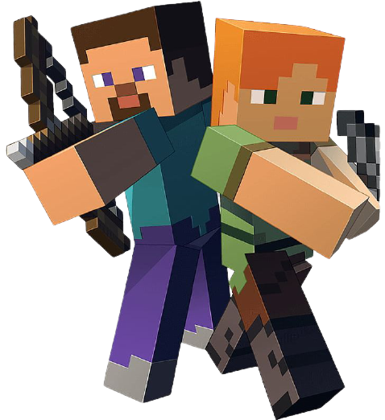

Minecraft ir būvniecības datorspēle, kuru izveidojis Markuss Pēšons (Markus Persson) un tā dibinātā kompānija Mojang AB, kas bāzēta Stokholmā, Zviedrijā. Spēle paredz spēlētājiem izveidot un sagraut dažāda veida blokus trīsdimensiju vidē. Spēlētājs pieņem tēlu, kas var sagraut vai izveidot blokus, kas veido fantastiskas struktūras un mākslas darbus dažādos daudzspēlētāju serveros vairākos spēļu režīmos "izdzīvošanas", "radošais", "nežēlīgais" un "piedzīvojumu" (survival, creative, hardcore, adventure).
